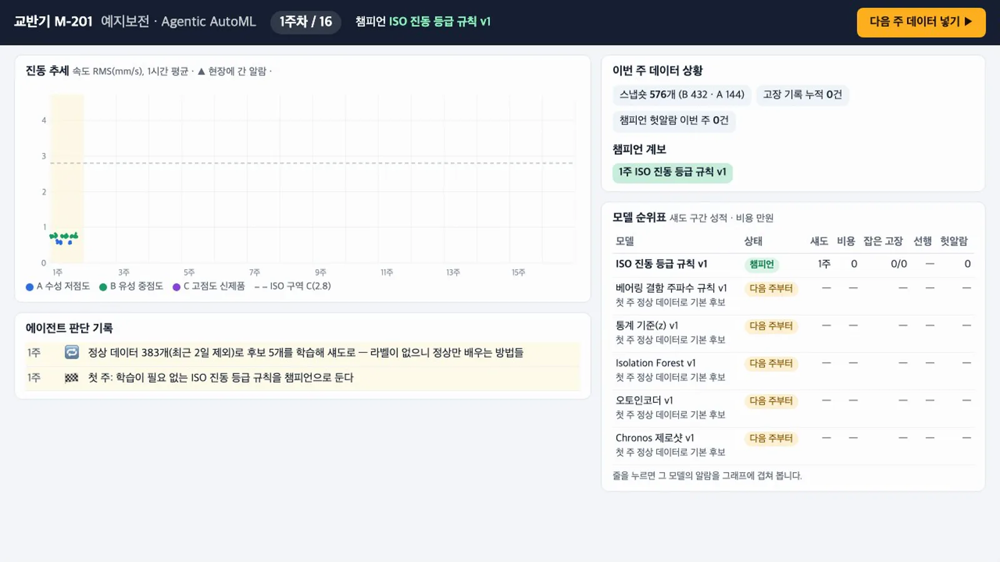
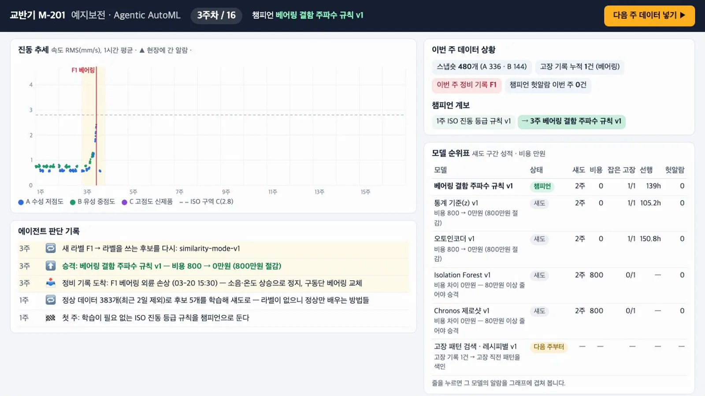
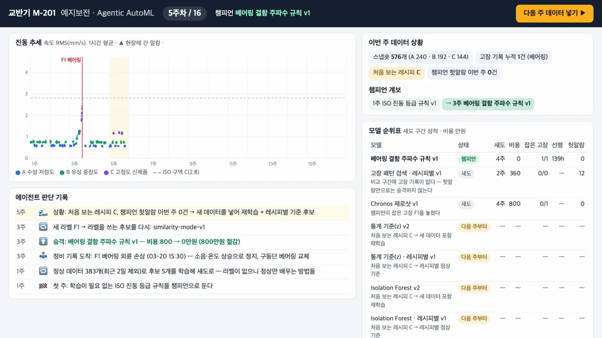
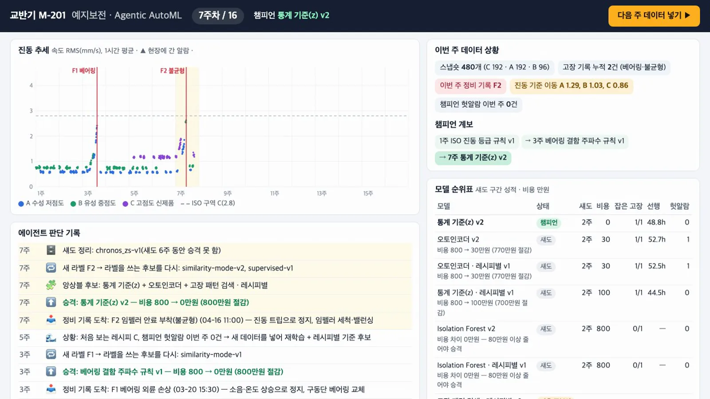
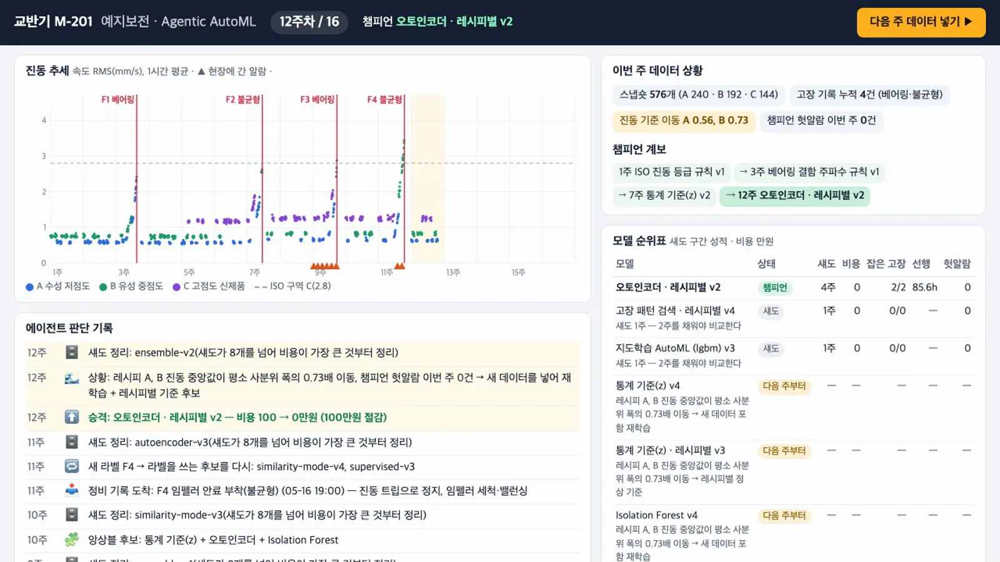
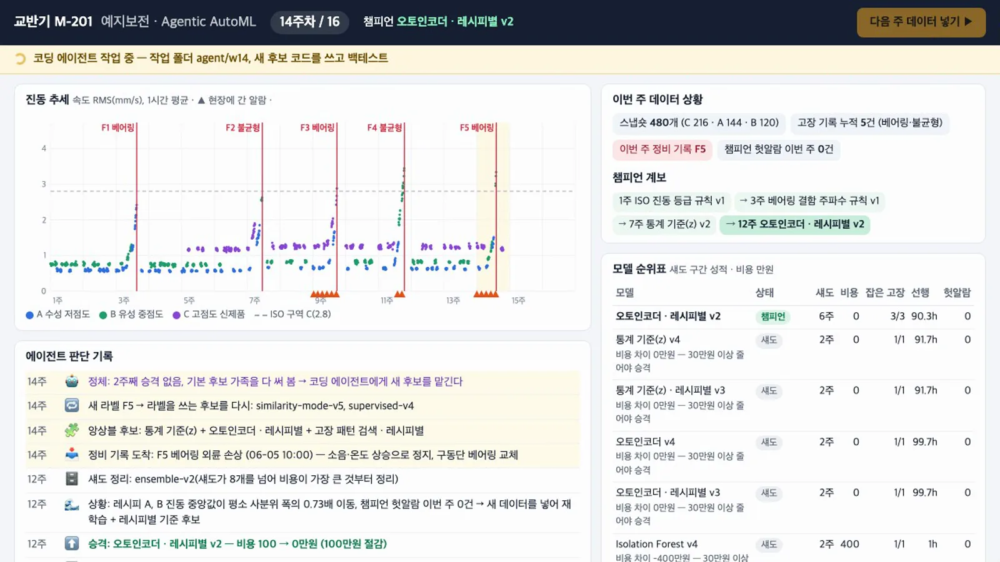
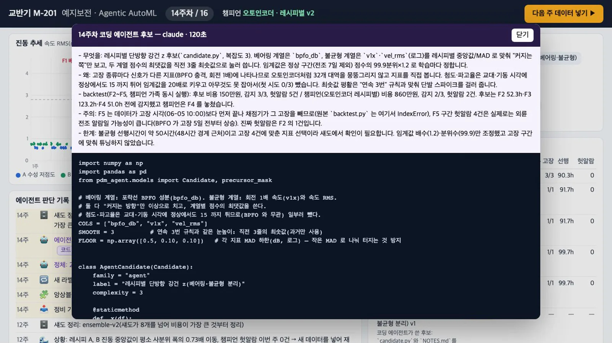
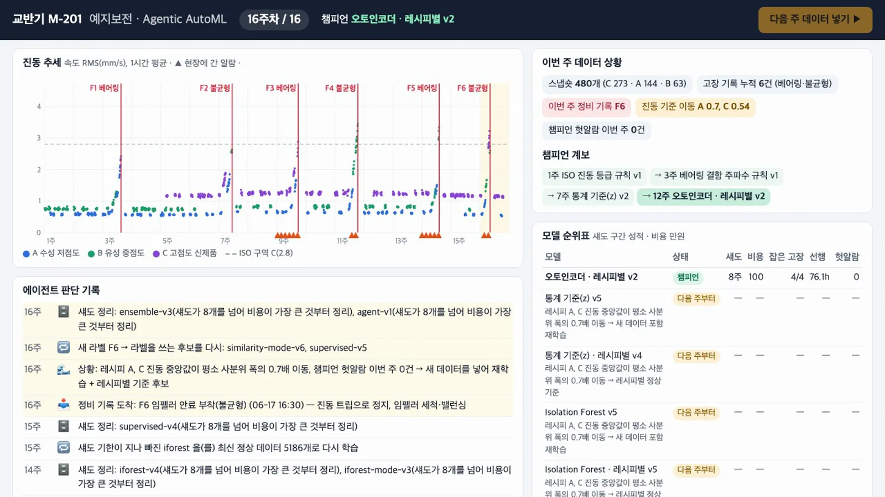

교반기 데이터가 매주 들어오면 하네스가 상황을 진단해 후보를 학습합니다. 섀도 모드에서 얻은 성적과 정해진 승격 규칙에 따라 챔피언을 바꿉니다. 기본 후보로 더 나아지지 않으면 코딩 에이전트(Claude Code)가 새 후보 코드를 작성합니다. 채점과 승격에는 같은 규칙을 적용합니다. 16주를 실제로 실행해 ISO 규칙 → BPFO 공식 → 통계 기준 → 레시피별 오토인코더로 바뀌는 과정을 봅니다.
무엇을 · 왜#
현장 전문가는 "모델을 직접 파인튜닝하기보다, 코딩 에이전트에 데이터를 주기적으로 넣으면 스스로 모델을 고르고 다시 학습하고, 좋아지면 승격하고 아니면 섀도 모드로 둔다"는 쪽으로 운영이 옮겨 간다고 했습니다. 이 장은 그 생각을 에이전트가 판단하고, 규칙이 승격하는 구조로 만든 것입니다.
| 누가 | 무엇을 | 바꿀 수 있나 |
|---|---|---|
| 하네스의 정책(에이전트) | 데이터 상황을 보고 무엇을 학습할지 정합니다 | 규칙 코드(policy)로 |
| 코딩 에이전트(Claude Code) | 성능이 정체되면 새 후보 코드 candidate.py를 작성합니다 |
작업 폴더 안에서만 |
| 채점기·승격 규칙 | 섀도 성적으로 챔피언을 정합니다 | 에이전트는 변경 불가 |
구조#
| 파일 | 하는 일 |
|---|---|
pdm_agent/mixer_sim.py, features.py |
4장의 데이터와 특징 |
pdm_agent/models.py |
후보 가족 9개. 모두 fit(train, failures)와 score(df)(1.0 이상이면 임계값 초과) 규약을 따릅니다 |
pdm_agent/evaluate.py |
알람을 사건으로 묶어 정비 기록과 맞추고 비용으로 채점 |
pdm_agent/gate.py |
섀도 → 챔피언 승격 규칙 |
pdm_agent/orchestrator.py |
매주 한 바퀴: 점수 → 채점 → 승격 → 상황 진단 → 후보 학습 → (정체) 코딩 에이전트 |
pdm_agent/coding_agent.py |
코딩 에이전트 작업 폴더·호출·검증 |
pdm_agent/server.py, dashboard/ |
대시보드 |
후보 가족#
| 가족 | 기본 원리 | 생성 시점 |
|---|---|---|
| ISO 진동 등급 규칙 | 속도 RMS 2.8 mm/s 이상이면 알람 | 1주차 챔피언(학습 없음) |
| 베어링 결함 주파수 규칙 | 포락선 BPFO 성분이 배경보다 4 dB 이상 | 1주차 |
| 통계 기준(z) | 핵심 지표 6개가 평소에서 몇 σ 벗어났나 | 1주차, 드리프트 때 |
| Isolation Forest | 정상 데이터에서 쉽게 분리되는 점 | 1주차, 드리프트 때 |
| 오토인코더 | 정상 스펙트럼을 복원하지 못하는 정도 | 1주차, 드리프트 때 |
| Chronos 제로샷 | 8시간 앞선 문맥으로 지금 값을 예측, 예측 구간을 벗어난 정도 | 1주차 |
| 고장 패턴 검색 | 고장 직전 3일 벡터와 정상 벡터 중 어디에 가까운가 | 고장 기록 1건 이상 |
| 지도학습 AutoML | FLAML이 lgbm·rf·extra_tree 중 고른 분류기 | 고장 2건·2종 이상 |
| 앙상블 | 고장을 잡아 본 서로 다른 가족 2~3개의 점수 평균 | 고장 2건 이상, 앙상블 섀도가 없을 때 |
통계 기준·Isolation Forest·오토인코더는 레시피별 정상 기준(레시피마다 평균·표준편차로 정규화) 변형도 함께 만듭니다.
채점 규칙#
| 항목 | 규칙 |
|---|---|
| 알람 | 정규화 점수 1.0 이상이 3번 연속. 6시간 안에 다시 울리면 같은 알람 |
| 감지 | 고장 전 7일 안에 시작한 첫 알람 |
| 비용(만원, 가정) | 놓침 800 · 12시간 전보다 늦게 잡음 400 · 12~48시간 전 100 · 48시간 넘게 앞섬 0 · 헛알람 30 |
| 알람 피로 | 직전 7일 헛알람이 3번 이상이면, 그 뒤 알람은 사람이 보지 않아 감지로 인정하지 않습니다 |
승격 규칙#
- 섀도 모드로 2주 이상 실행했습니다.
- 비교 구간에 고장 기록이 1건 이상 있습니다. 헛알람이 적다는 것만으로는 고장을 전혀 잡지 못하는 모델과 구별할 수 없습니다.
- 챔피언이 잡은 고장을 하나도 놓치지 않았습니다.
- 비용이 챔피언보다 10% 이상, 그리고 30만원 이상 적습니다.
여러 후보가 통과하면 함께 실행한 구간에서 비용이 가장 적은 후보를 고릅니다. 비용이 같으면 더 단순한 후보를 고릅니다. 경계 사례 10건은 tests/gate-cases.json에 있습니다(예: 400 → 360은 승격, 400 → 361은 보류, 100 → 70은 승격, 100 → 71은 보류).
정책: 상황 → 무엇을 학습할까#
| 상황 | 하는 일 |
|---|---|
| 첫 주 | 정상 데이터(최근 2일 제외)로 후보 5개를 학습해 다음 주부터 섀도 |
| 처음 보는 레시피, 또는 레시피별 진동 중앙값이 평소 사분위 폭의 0.5배 넘게 이동(알려진 고장 전 7일은 빼고 계산, 3주에 한 번까지) | 비지도 후보를 새 데이터로 + 레시피별 기준으로 재학습 |
| 새 정비 기록 | 라벨을 쓰는 후보(고장 패턴 검색, 지도학습)만 다시 |
| 고장 2건 이상, 앙상블 섀도 없음 | 앙상블 후보 |
| 섀도 기한(6주)이 지나 제외된 가족 | 최신 정상 데이터로 다시 |
| 라벨을 쓰는 후보와 앙상블이 실제 고장으로 채점받고도 못 이기고, 2주 동안 승격 없음 | 코딩 에이전트 호출(4주에 한 번) |
섀도는 8개까지 두고, 넘으면 비용이 큰 것부터 정리합니다. 코딩 에이전트 후보는 고장으로 한 번 채점받기 전에는 정리하지 않습니다.
따라 하기#
-
데이터를 만들고(4장) 대시보드를 띄웁니다. 코딩 에이전트까지 보려면
--agent claude(Claude Code 로그인 필요), 없으면--agent stub(시험용 고정 후보)입니다..venv/bin/python textbook/06_mixer_data.py PYTHONPATH=. .venv/bin/python -m pdm_agent.server --run runs/demo --port 8781 --agent claude # http://127.0.0.1:8781/ -
다음 주 데이터 넣기를 누릅니다. 1주차 챔피언은 학습이 필요 없는 ISO 진동 등급 규칙이고, 정상 일주일로 학습한 후보 5개가 「다음 주부터」로 순위표에 올라옵니다.

1주차: 챔피언은 ISO 규칙, 후보 5개는 다음 주부터 섀도 -
2주차를 넣습니다. 고장 기록이 없으므로 순위표에 성적이 쌓여도 승격은 없습니다.
-
3주차를 넣습니다. 정비 기록 F1 베어링 외륜 손상이 들어옵니다. ISO 규칙은 이 고장을 놓쳤고(800만원), 섀도 후보 가운데 BPFO 규칙(139시간 전)·오토인코더(150.8시간 전)·통계 기준(105.2시간 전)이 나흘 넘게 앞서 잡았습니다. 비용이 같은 후보 가운데 가장 단순한 베어링 결함 주파수 규칙이 승격되어 챔피언 계보에 추가됩니다.

3주차: 첫 정비 기록 F1 뒤 BPFO 규칙으로 승격 -
5주차를 넣습니다. 처음 보는 레시피 C가 판단 기록에 드리프트로 남고, 비지도 후보 3가족을 일반 모델과 레시피별 모델로 다시 학습합니다.

5주차: 처음 보는 레시피 C → 드리프트 재학습 -
7주차를 넣습니다. F2 임펠러 불균형이 발생합니다. 챔피언인 BPFO 규칙은 불균형을 감지하지 못했습니다. 레시피 C까지 학습한 통계 기준(z) v2가 48.8시간 전에 잡아 승격됩니다(800 → 0만원). 고장이 두 종류가 되자 지도학습 AutoML과 앙상블 후보도 생깁니다.

7주차: BPFO 규칙이 놓친 불균형을 잡은 통계 기준 v2로 승격 -
8~11주차를 넣습니다. 8주차에는 정비 뒤 기준 변화(중앙값 이동 사분위 폭의 1.0배)를 드리프트로 잡아 다시 학습합니다. 섀도가 8개를 넘으면 비용이 큰 것부터 정리됩니다.
-
12주차를 넣습니다. 오토인코더 · 레시피별 v2가 불균형을 더 일찍 잡아 승격됩니다(100 → 0만원).

12주차: 레시피별 오토인코더로 승격, 계보는 ISO → BPFO → z → 오토인코더 -
13·14주차를 넣습니다. 14주차에 두 주째 승격이 없고 기본 후보들이 실제 고장으로 채점받았으므로 정체 상태로 판단합니다. 위쪽 표시줄에 코딩 에이전트 작업 중이 보이고, 이번 실행에서는 약 2분이 걸렸습니다.

14주차: 코딩 에이전트 작업 중 -
판단 기록의 코드 보기를 누르면 에이전트가 쓴 코드와 메모가 열립니다.

에이전트가 쓴 후보: 레시피별 단방향 강건 z(베어링·불균형 분리)와 메모 -
15·16주차를 넣습니다. 에이전트 후보도 마지막 고장 F6을 33.8시간 전에 잡았지만 챔피언과 비용(100만원)이 같아 승격되지 않았고, 채점을 받은 뒤 섀도 정리 과정에서 제외되었습니다.

16주차: 마지막 상태와 판단 기록
코딩 에이전트는 무엇을 받고 무엇을 내나#
하네스는 runs/<run>/agent/wNN/ 작업 폴더를 만들고 그 안에서만 에이전트를 실행합니다.
| 작업 폴더 | 내용 |
|---|---|
BRIEF.md |
설비·센서·고장 종류, 지금 상황(챔피언·후보 성적), 채점·승격 규칙, 지켜야 할 규약(AgentCandidate(Candidate)의 fit·score), 쓸 수 있는 라이브러리 |
data.parquet, failures.json |
지금까지의 데이터 사본(최근 2일 제외)과 정비 기록 |
reference/ |
기존 후보 코드와 채점기(읽기만) |
backtest.py |
지난 고장마다 그 전 데이터로 학습하고 그 고장 구간을 채점(챔피언 가족의 성적도 함께) |
호출은 이렇게 합니다. 웹은 막고, 파일 쓰기와 이 폴더의 파이썬 실행만 허용합니다.
claude -p --model sonnet --output-format json --permission-mode acceptEdits \
--allowedTools Read Write Edit Glob Grep 'Bash(<venv>/bin/python:*)' --disallowedTools WebFetch WebSearch
에이전트가 남긴 candidate.py는 다른 프로세스에서 먼저 불러와 학습과 점수 계산을 수행합니다. 같은 입력에 같은 점수가 나오고 NaN이 없어야 섀도로 등록됩니다. 폐쇄망이면 PDM_AGENT_CMD 환경변수로 OpenCode 같은 다른 코딩 에이전트의 명령을 지정합니다(작업 폴더에서 실행되고, 표준 입력으로 지시를 받고, candidate.py를 남기면 됩니다).
이번에 실제로 두 번 실행한 결과입니다.
| 실행 | 에이전트가 낸 후보 | 걸린 시간 · 턴 · 비용 | 섀도 결과 |
|---|---|---|---|
| 1차 | 레시피별 강건 단방향 z + 이동 중앙값 | 112초 · 28턴 · 0.48달러 | F6을 32시간 전에 잡음, 챔피언과 같은 비용이라 보류 |
| 2차(영상) | 레시피별 단방향 강건 z(베어링·불균형 분리) | 120초 · 27턴 · 0.49달러 | F6을 33.8시간 전에 잡음, 같은 비용이라 보류 |
두 번 모두 에이전트는 "첨도는 원료 투입 때 정상에서도 튀어서 뺐다", "베어링은 BPFO, 불균형은 1배 진동을 따로 본다"는 결론에 스스로 이르렀습니다. 메모에 백테스트 숫자와 한계(48시간 경계 근처의 선행시간, 고장 몇 건에 맞춘 지표 선택)도 적었습니다. 2차 에이전트는 고장 시각이 데이터 끝보다 뒤면 backtest.py가 멈추는 결함도 찾아 메모에 남겼고, 이 결함은 하네스에서 수정했습니다.
백테스트와 섀도가 다를 수 있습니다
2차 후보는 고친 백테스트에서 비용 30만원으로 챔피언 가족(930만원)보다 크게 앞섰지만, 실제 섀도 2주에서는 챔피언과 같은 100만원이었습니다. 지난 고장에 맞춘 성적은 승격 근거가 되지 않고, 앞으로 들어온 데이터에서의 성적(섀도)만 근거가 됩니다.
시험#
PYTHONPATH=. .venv/bin/python -m pytest -q tests # 32개: 채점·승격 경계·16주 시나리오·대시보드 API
node --test --test-concurrency=1 e2e/dashboard.test.mjs # 6개: 화면에서 1~14주를 눌러 보는 회귀
알아 둘 점#
- 합성 데이터와 가정한 비용으로 얻은 흐름입니다. 회사 데이터에서는 승격 순서와 시점이 달라집니다.
- 코딩 에이전트가 쓴 코드는 이 컴퓨터에서 실행됩니다. 실제 운영에서는 작업 폴더를 컨테이너 같은 격리 환경에서 돌리세요.
- 지도학습 AutoML은 한 번도 승격하지 못했습니다. 고장 6건으로는 정상과 전조를 구분하기에 데이터가 부족했습니다. 라벨이 더 쌓이면 달라질 수 있습니다.
확인 문제#
- 2주차에 섀도 후보 몇 개가 챔피언보다 헛알람이 적었는데도 승격하지 않은 이유는 무엇인가요?
정답
비교 구간에 고장 기록이 없었기 때문입니다(승격 규칙 2). 고장을 전혀 잡지 못하는 모델도 헛알람은 적을 수 있습니다. 따라서 실제 고장을 잡는지 확인하기 전에는 승격하지 않습니다.
- 7주차에 BPFO 규칙이 챔피언 자리를 내준 까닭을 물리로 설명해 보세요.
정답
BPFO 규칙은 베어링 외륜 결함 주파수의 충격만 봅니다. F2는 임펠러에 안료가 붙어 생긴 불균형 고장입니다. 회전 1배 성분이 커지지만 BPFO 성분에는 나타나지 않습니다. 그래서 놓쳤고(800만원), 1배 진동까지 보는 통계 기준 모델이 승격됐습니다.
- 코딩 에이전트가 낸 후보가 백테스트에서 크게 앞섰는데 왜 바로 챔피언이 되지 않나요? 이렇게 한 이유도 함께 말해 보세요.
정답
승격은 섀도(앞으로 들어온 데이터)에서 2주 이상, 실제 고장으로 채점한 성적으로만 정하기 때문입니다. 백테스트는 에이전트가 이미 본 지난 고장에 맞춰질 수 있습니다. 실제로 이번 후보는 섀도에서 챔피언과 같은 비용이었습니다. 이렇게 하면 에이전트가 무엇을 만들든 현장에 적용되는 모델은 모두 같은 기준을 통과하게 됩니다.